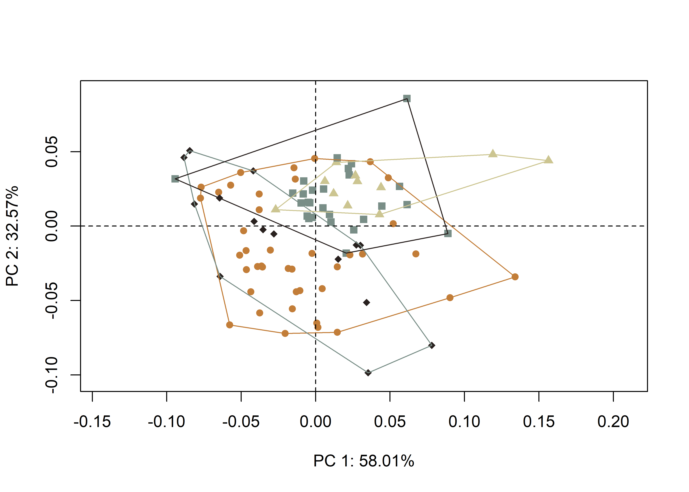
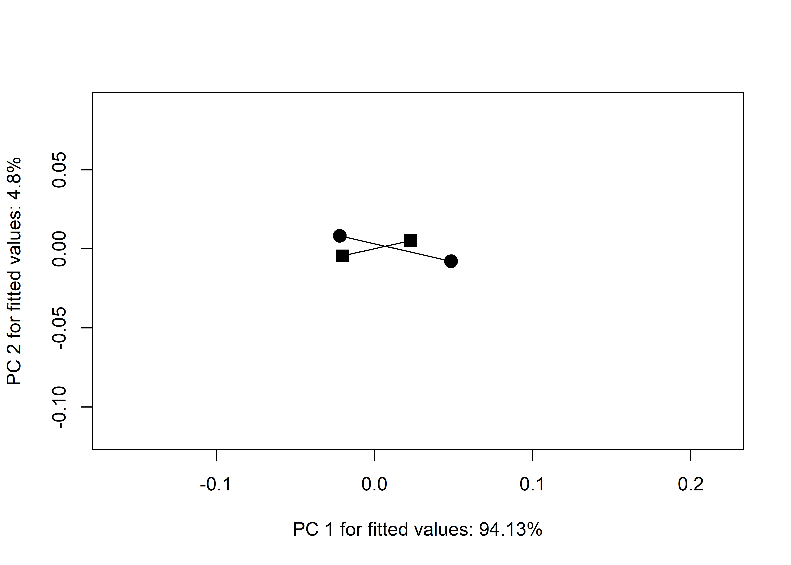

Chapter 3 Rim morphology
3.1 Load packages + data
# load packages
# devtools::install_github("combmorphR/combmorph", ref = "Stable", build_vignettes = TRUE)
library(here)
library(geomorph)
library(tidyverse)
library(wesanderson)
# read GM data
source('readmulti.csv.R')
setwd("./data")
filelist <- list.files(pattern = ".csv")
coords <- readmulti.csv(filelist)
setwd("../")
# read qualitative data
qdata <- read.csv("qdata.csv",
header = TRUE,
row.names = 1)
qdata <- qdata[match(dimnames(coords)[[3]],
rownames(qdata)),]3.2 Generalised Procrustes Analysis
Landmark data were aligned to a global coordinate system (Kendall 1981, 1984; Slice 2001), achieved through generalised Procrustes superimposition (Rohlf and Slice 1990) performed in R 4.0.3 (R Core Development Team, 2020) using the geomorph library v. 3.3.2 (Adams et al. 2017; Adams and Otárola-Castillo 2013). Procrustes superimposition translates, scales, and rotates the coordinate data to allow for comparisons among objects (Gower 1975; Rohlf and Slice 1990). The geomorph package uses a partial Procrustes superimposition that projects the aligned specimens into tangent space subsequent to alignment in preparation for the use of multivariate methods that assume linear space (Rohlf 1999; Slice 2001).
#select landmarks from coords
x <- c(1:6,50:55)
# new coords
bot.rim <- coords[x,,]
# gpa
Y.gpa <- gpagen(bot.rim,
PrinAxes = TRUE,
ProcD = TRUE,
Proj = TRUE,
print.progress = FALSE)
# geomorph data frame
gdf <- geomorph.data.frame(shape = Y.gpa$coords,
size = Y.gpa$Csize,
geo = qdata$geo,
time = qdata$time,
comb = qdata$comb)
# render 3d gpa plot
#plot(Y.gpa)
# gpa plot
#knitr::include_graphics('images/gpa3d.png')
# add rim centroid size to qdata
qdata$csz <- Y.gpa$Csize
# print updated qdata with rim centroid size
knitr::kable(qdata,
align = "lccccc",
caption = "Modified attributes included in qdata.")| site | type | geo | time | comb | csz | |
|---|---|---|---|---|---|---|
| 1-15-3-Pot3 | Atkinson Farm | Hodges Engraved | north | Late-Historic | north, late historic | 65.98576 |
| 1054 | Belcher Mound | Taylor Engraved | north | Late-Historic | north, late historic | 38.50509 |
| 1073 | Belcher Mound | Belcher Engraved | north | Late-Historic | north, late historic | 62.09144 |
| 121 | Salt Lick | Wilder Engraved | south | Late-Historic | south, late historic | 67.11441 |
| 132 | Paul Mitchell | Hickory Fine Engraved | north | Formative-Early | north, formative early | 77.88818 |
| 142 | Allen Plantation | Hickory Fine Engraved | south | Formative-Early | south, formative early | 83.92917 |
| 152 | Smithport Landing | Smithport Plain | south | Formative-Early | south, formative early | 43.46430 |
| 157 | Smithport Landing | Hickory Fine Engraved | south | Formative-Early | south, formative early | 80.78311 |
| 16 | Pohler Coll | UID | north | Late-Historic | north, late historic | 76.24408 |
| 16sa37-121 | Eleven Ton Bridge | Wilder Engraved | south | Late-Historic | south, late historic | 68.67906 |
| 18 | Pohler Coll | Smithport Plain | north | Formative-Early | north, formative early | 67.17599 |
| 19-361 | George C Davis | Holly Fine Engraved | south | Formative-Early | south, formative early | 65.17253 |
| 19-4020 | George C Davis | Holly Fine Engraved | south | Formative-Early | south, formative early | 73.78849 |
| 2 | Mustang Creek Mound | Hickory Fine Engraved | north | Formative-Early | north, formative early | 82.31644 |
| 20 | Pohler Coll | Hickory Fine Engraved | north | Formative-Early | north, formative early | 76.87516 |
| 2007.18.02 | Green | UID | north | Late-Historic | north, late historic | 79.51909 |
| 2015-1 | George C Davis | Hickory Fine Engraved | south | Formative-Early | south, formative early | 50.32018 |
| 2097-1 | George C Davis | Holly Fine Engraved | south | Formative-Early | south, formative early | 78.90163 |
| 23 | Pohler Coll | Hickory Fine Engraved | north | Formative-Early | north, formative early | 84.04748 |
| 24 | Pohler Coll | UID | north | Late-Historic | north, late historic | 75.10932 |
| 256 | Belcher Mound | Taylor Engraved | north | Late-Historic | north, late historic | 73.66663 |
| 267 | Belcher Mound | Belcher Engraved | north | Late-Historic | north, late historic | 80.36829 |
| 269 | Belcher Mound | Belcher Engraved | north | Late-Historic | north, late historic | 83.77998 |
| 27 | Pohler Coll | Smithport Plain | north | Formative-Early | north, formative early | 77.14228 |
| 271 | Belcher Mound | Taylor Engraved | north | Late-Historic | north, late historic | 71.09115 |
| 29 | Pohler Coll | UID | north | Late-Historic | north, late historic | 74.97308 |
| 30 | Pohler Coll | Maxey Noded Redware | north | Formative-Early | north, formative early | 68.35471 |
| 31-1-79 | Poole | Maxey Noded Redware | north | Formative-Early | north, formative early | 70.67966 |
| 31 | Pohler Coll | UID | north | Late-Historic | north, late historic | 72.80012 |
| 317 | Belcher Mound | UID | north | Late-Historic | north, late historic | 70.59776 |
| 325 | Belcher Mound | Wilder Engraved | north | Late-Historic | north, late historic | 79.96197 |
| 340 | Belcher Mound | UID | north | Late-Historic | north, late historic | 67.61391 |
| 361 | Belcher Mound | Belcher Engraved | north | Late-Historic | north, late historic | 80.92017 |
| 363 | Belcher Mound | Belcher Engraved | north | Late-Historic | north, late historic | 73.44304 |
| 404 | Belcher Mound | Hickory Fine Engraved | north | Formative-Early | north, formative early | 85.94097 |
| 41sy25-2 | S. H. Latham | Wilder Engraved | south | Late-Historic | south, late historic | 105.24721 |
| 41sy25-3 | S. H. Latham | UID | south | Late-Historic | south, late historic | 115.72205 |
| 42 | Pohler Coll | UID | north | Late-Historic | north, late historic | 72.77601 |
| 427 | Paul Mitchell | Hickory Fine Engraved | north | Formative-Early | north, formative early | 95.04222 |
| 46 | Pohler Coll | UID | north | Late-Historic | north, late historic | 81.48611 |
| 464 | Paul Mitchell | Hickory Fine Engraved | north | Formative-Early | north, formative early | 63.23554 |
| 55-16-3 | Battle Mound | Haley Engraved | north | Formative-Early | north, formative early | 88.98831 |
| 55-16-39 | Battle Mound | Belcher Engraved | north | Late-Historic | north, late historic | 87.03513 |
| 6-6-609 | Hatchel | Belcher Engraved | north | Late-Historic | north, late historic | 88.70500 |
| 67 | Paul Mitchell | Smithport Plain | north | Formative-Early | north, formative early | 52.31553 |
| 7 | Frank Norris Farm | Hickory Fine Engraved | north | Formative-Early | north, formative early | 77.41340 |
| 775 | Belcher Mound | Belcher Engraved | north | Late-Historic | north, late historic | 86.41343 |
| 78 | Paul Mitchell | Smithport Plain | north | Formative-Early | north, formative early | 70.63010 |
| 784 | Belcher Mound | Keno Trailed | north | Late-Historic | north, late historic | 89.84291 |
| 787 | Belcher Mound | Taylor Engraved | north | Late-Historic | north, late historic | 81.97815 |
| 788 | Belcher Mound | Belcher Engraved | north | Late-Historic | north, late historic | 85.57609 |
| 8-91-Pot2 | Atkinson Farm | Avery Engraved | north | Late-Historic | north, late historic | 85.60148 |
| 8 | Crenshaw Mound | Hickory Fine Engraved | north | Formative-Early | north, formative early | 87.25794 |
| 803 | Belcher Mound | Belcher Engraved | north | Late-Historic | north, late historic | 85.26043 |
| 804 | Belcher Mound | Hodges Engraved | north | Late-Historic | north, late historic | 61.97563 |
| 805 | Belcher Mound | Belcher Engraved | north | Late-Historic | north, late historic | 73.25631 |
| 845 | Belcher Mound | Belcher Engraved | north | Late-Historic | north, late historic | 73.60189 |
| 852 | Belcher Mound | Keno Trailed | north | Late-Historic | north, late historic | 88.08693 |
| 897 | Belcher Mound | Belcher Engraved | north | Late-Historic | north, late historic | 71.30796 |
| 904 | Greer Farm | UID | north | Late-Historic | north, late historic | 92.16016 |
| 929 | Lawton Plantation | Keno Trailed | south | Late-Historic | south, late historic | 59.42916 |
| 95 | Smithport Landing | Smithport Plain | south | Formative-Early | south, formative early | 72.49407 |
| 955 | Gahagan Mound | Hickory Fine Engraved | south | Formative-Early | south, formative early | 73.44819 |
| 956 | Gahagan Mound | Hickory Fine Engraved | south | Formative-Early | south, formative early | 66.80336 |
| 96 | Smithport Landing | Hickory Fine Engraved | south | Formative-Early | south, formative early | 72.22249 |
| 979 | Belcher Mound | Hempstead Engraved | north | Late-Historic | north, late historic | 92.38546 |
| 997 | Belcher Mound | Belcher Engraved | north | Late-Historic | north, late historic | 76.90782 |
| B1V3 | Griffin | UID | south | Late-Historic | south, late historic | 92.11241 |
| BELCH1 | Haley Place | Belcher Engraved | north | Late-Historic | north, late historic | 58.01135 |
| FIN-S18 | Vanderpool | UID | north | Late-Historic | north, late historic | 89.41568 |
| FIN-S3 | Vanderpool | Hume Engraved | north | Late-Historic | north, late historic | 69.37319 |
| FIN-S4 | Vanderpool | Poynor Engraved | north | Late-Historic | north, late historic | 84.57572 |
| FS7 | Hatchel | Hickory Fine Engraved | north | Formative-Early | north, formative early | 60.47428 |
| HBE1 | Haley Place | Belcher Engraved | north | Late-Historic | north, late historic | 57.88573 |
| HCN3 | Hancock | UID | south | Late-Historic | south, late historic | 84.32092 |
| HE3 | Haley Place | Haley Engraved | north | Formative-Early | north, formative early | 104.49274 |
| HEB36 | Haley Place | Haley Engraved | north | Formative-Early | north, formative early | 91.44800 |
| HEB40 | Haley Place | Haley Engraved | north | Formative-Early | north, formative early | 82.75060 |
| HFE1 | Haley Place | Hickory Fine Engraved | north | Formative-Early | north, formative early | 86.32105 |
| HFE2 | Haley Place | Hickory Fine Engraved | north | Formative-Early | north, formative early | 92.25174 |
| HFE3 | Haley Place | Hickory Fine Engraved | north | Formative-Early | north, formative early | 75.99194 |
| HFE4 | Haley Place | Hickory Fine Engraved | north | Formative-Early | north, formative early | 81.93087 |
| HFE5 | Haley Place | Hickory Fine Engraved | north | Formative-Early | north, formative early | 65.32512 |
| MFB | Hancock | UID | south | Late-Historic | south, late historic | 107.10244 |
| SMPRTPLN1 | Haley Place | Smithport Plain | north | Formative-Early | north, formative early | 86.10183 |
| SMPRTPLN2 | Haley Place | Smithport Plain | north | Formative-Early | north, formative early | 88.62456 |
| SMU16 | Bison B | Taylor Engraved | south | Late-Historic | south, late historic | 34.91707 |
| SMU34 | Bison B | Taylor Engraved | south | Late-Historic | south, late historic | 46.39833 |
| SMU67 | Bison B | Taylor Engraved | south | Late-Historic | south, late historic | 66.61778 |
| vessel-E | M. W. Burks | UID | north | Late-Historic | north, late historic | 55.36278 |
| x16sa4-17 | Bison B | Wilder Engraved | south | Late-Historic | south, late historic | 88.99452 |
| x16sa4-2 | Bison B | Wilder Engraved | south | Late-Historic | south, late historic | 98.36211 |
| x16sa4-26 | Bison B | Wilder Engraved | south | Late-Historic | south, late historic | 69.59423 |
| x16sa4-65 | Bison B | Wilder Engraved | south | Late-Historic | south, late historic | 64.72619 |
3.2.1 Boxplot
# attributes for boxplot
csz <- qdata$csz # centroid size
comb <- qdata$comb # comb + time
# boxplot of Caddo bottle centroid size by comb (north/south)
csz.comb <- ggplot(qdata, aes(x = comb, y = csz, color = comb)) +
geom_boxplot() +
geom_dotplot(binaxis = 'y', stackdir = 'center', dotsize = 0.3) +
scale_colour_manual(values = wes_palette("Moonrise2")) +
theme(legend.position = "none") +
labs(x = 'North/South + Formative/Early or Late/Historic?', y = 'Rim Centroid Size')
# render plot
csz.comb## `stat_bindot()` using `bins = 30`. Pick better value with `binwidth`.(#fig:box1.rim)Boxplot of centroid size by spatial/temporal unit.
3.3 Principal Components Analysis
Principal components analysis (Jolliffe 2002) was used to visualise rim shape variation. The shape changes described by each principal axis are commonly visualised using thin-plate spline warping of a reference 3D mesh (Klingenberg 2013; Sherratt et al. 2014).
# principal components analysis
pca<-gm.prcomp(Y.gpa$coords)
summary(pca)##
## Ordination type: Principal Component Analysis
## Centering by OLS mean
## Orthogonal projection of OLS residuals
## Number of observations: 94
## Number of vectors 36
##
## Importance of Components:
## Comp1 Comp2 Comp3 Comp4 Comp5 Comp6 Comp7 Comp8 Comp9 Comp10 Comp11 Comp12
## Eigenvalues 0.002281383 0.001281123 0.0001551107 9.233803e-05 0.0000821314 1.473317e-05 1.093669e-05 5.949575e-06 2.826458e-06 1.769423e-06 1.225202e-06 1.091069e-06
## Proportion of Variance 0.580081660 0.325747920 0.0394396148 2.347856e-02 0.0208833452 3.746166e-03 2.780846e-03 1.512784e-03 7.186765e-04 4.499069e-04 3.115292e-04 2.774235e-04
## Cumulative Proportion 0.580081660 0.905829580 0.9452691952 9.687478e-01 0.9896311018 9.933773e-01 9.961581e-01 9.976709e-01 9.983896e-01 9.988395e-01 9.991510e-01 9.994284e-01
## Comp13 Comp14 Comp15 Comp16 Comp17 Comp18 Comp19 Comp20 Comp21 Comp22 Comp23
## Eigenvalues 8.356519e-07 5.767271e-07 3.403148e-07 2.544418e-07 9.435955e-08 8.335138e-08 4.057979e-08 2.246983e-08 2.635061e-17 1.775193e-17 1.325870e-17
## Proportion of Variance 2.124791e-04 1.466430e-04 8.653099e-05 6.469628e-05 2.399257e-05 2.119355e-05 1.031812e-05 5.713347e-06 6.700103e-15 4.513740e-15 3.371256e-15
## Cumulative Proportion 9.996409e-01 9.997876e-01 9.998741e-01 9.999388e-01 9.999628e-01 9.999840e-01 9.999943e-01 1.000000e+00 1.000000e+00 1.000000e+00 1.000000e+00
## Comp24 Comp25 Comp26 Comp27 Comp28 Comp29 Comp30 Comp31 Comp32 Comp33 Comp34
## Eigenvalues 1.124233e-17 9.601210e-18 9.287954e-18 7.589861e-18 6.556689e-18 5.178058e-18 8.849483e-32 1.422006e-32 1.020500e-33 9.425661e-34 1.940843e-34
## Proportion of Variance 2.858559e-15 2.441276e-15 2.361625e-15 1.929855e-15 1.667153e-15 1.316612e-15 2.250136e-29 3.615700e-30 2.594801e-31 2.396639e-31 4.934932e-32
## Cumulative Proportion 1.000000e+00 1.000000e+00 1.000000e+00 1.000000e+00 1.000000e+00 1.000000e+00 1.000000e+00 1.000000e+00 1.000000e+00 1.000000e+00 1.000000e+00
## Comp35 Comp36
## Eigenvalues 1.132780e-35 1.132780e-35
## Proportion of Variance 2.880291e-33 2.880291e-33
## Cumulative Proportion 1.000000e+00 1.000000e+00# set plot parameters
pch.gps.comb <- c(15:18)[as.factor(comb)]
col.gps.comb <- wes_palette("Moonrise2")[as.factor(comb)]
col.hull <- c("#C27D38","#798E87","#29211F","#CCC591")
# plot pca by comb
pc.plot <- plot(pca,
asp = 1,
pch = pch.gps.comb,
col = col.gps.comb)
shapeHulls(pc.plot,
groups = comb,
group.cols = col.hull)
# pca warp
#knitr::include_graphics('images/pca-warp.jpg')3.4 Define models
A residual randomisation permutation procedure (RRPP; n = 10,000 permutations) was used for all Procrustes ANOVAs (Adams and Collyer 2015; Michael L. Collyer and Adams 2018), which has higher statistical power and a greater ability to identify patterns in the data should they be present (Anderson and Ter Braak 2003). To assess whether shape changes differ by group (geography and time), Procrustes ANOVAs (Goodall 1991) were also run that enlist effect-sizes (zscores) computed as standard deviates of the generated sampling distributions (M. L. Collyer, Sekora, and Adams 2015).
3.4.1 Size and shape
# size
fit.sz.geo <- procD.lm(size ~ geo,
data = gdf,
print.progress = FALSE,
iter = 9999)
# size
fit.sz.time <- procD.lm(size ~ time,
data = gdf,
print.progress = FALSE,
iter = 9999)
# shape
fit.sh.geo <- procD.lm(shape ~ geo,
data = gdf,
print.progress = FALSE,
iter = 9999)
# shape
fit.sh.time <- procD.lm(shape ~ time,
data = gdf,
print.progress = FALSE,
iter = 9999)
# size.geo
fit.size <- procD.lm(size ~ geo * time,
data = gdf,
print.progress = FALSE,
iter = 9999)
# shape.geo
fit.shape <- procD.lm(shape ~ geo * time,
data = gdf,
print.progress = FALSE,
iter = 9999)3.5 Test Hypothesis
Hypothesis: The rim of Formative/Early and Late/Historic Caddo bottles found north and south of the shape boundary express unique patterns of shape change.
3.5.1 Procrustes ANOVA
# ANOVA: do Caddo bottle rim sizes differ by geo?
anova(fit.sz.geo)##
## Analysis of Variance, using Residual Randomization
## Permutation procedure: Randomization of null model residuals
## Number of permutations: 10000
## Estimation method: Ordinary Least Squares
## Sums of Squares and Cross-products: Type I
## Effect sizes (Z) based on F distributions
##
## Df SS MS Rsq F Z Pr(>F)
## geo 1 174.7 174.69 0.00931 0.865 0.418 0.3574
## Residuals 92 18579.8 201.95 0.99069
## Total 93 18754.5
##
## Call: procD.lm(f1 = size ~ geo, iter = 9999, data = gdf, print.progress = FALSE)# ANOVA: do Caddo bottle rim sizes differ by time?
anova(fit.sz.time)##
## Analysis of Variance, using Residual Randomization
## Permutation procedure: Randomization of null model residuals
## Number of permutations: 10000
## Estimation method: Ordinary Least Squares
## Sums of Squares and Cross-products: Type I
## Effect sizes (Z) based on F distributions
##
## Df SS MS Rsq F Z Pr(>F)
## time 1 0.4 0.445 0.00002 0.0022 -1.8463 0.9652
## Residuals 92 18754.0 203.848 0.99998
## Total 93 18754.5
##
## Call: procD.lm(f1 = size ~ time, iter = 9999, data = gdf, print.progress = FALSE)# ANOVA: do Caddo bottle rim shapes differ by geo?
anova(fit.sh.geo)##
## Analysis of Variance, using Residual Randomization
## Permutation procedure: Randomization of null model residuals
## Number of permutations: 10000
## Estimation method: Ordinary Least Squares
## Sums of Squares and Cross-products: Type I
## Effect sizes (Z) based on F distributions
##
## Df SS MS Rsq F Z Pr(>F)
## geo 1 0.00299 0.0029874 0.00817 0.7576 0.056742 0.4821
## Residuals 92 0.36277 0.0039431 0.99183
## Total 93 0.36576
##
## Call: procD.lm(f1 = shape ~ geo, iter = 9999, data = gdf, print.progress = FALSE)# ANOVA: do Caddo bottle rim shapes differ by time?
anova(fit.sh.time)##
## Analysis of Variance, using Residual Randomization
## Permutation procedure: Randomization of null model residuals
## Number of permutations: 10000
## Estimation method: Ordinary Least Squares
## Sums of Squares and Cross-products: Type I
## Effect sizes (Z) based on F distributions
##
## Df SS MS Rsq F Z Pr(>F)
## time 1 0.05881 0.058806 0.16078 17.626 4.2775 1e-04 ***
## Residuals 92 0.30695 0.003336 0.83922
## Total 93 0.36576
## ---
## Signif. codes: 0 '***' 0.001 '**' 0.01 '*' 0.05 '.' 0.1 ' ' 1
##
## Call: procD.lm(f1 = shape ~ time, iter = 9999, data = gdf, print.progress = FALSE)# ANOVA: do Caddo bottle rim sizes differ by geo + time?
anova(fit.size)##
## Analysis of Variance, using Residual Randomization
## Permutation procedure: Randomization of null model residuals
## Number of permutations: 10000
## Estimation method: Ordinary Least Squares
## Sums of Squares and Cross-products: Type I
## Effect sizes (Z) based on F distributions
##
## Df SS MS Rsq F Z Pr(>F)
## geo 1 174.7 174.69 0.00931 0.8775 0.42689 0.3540
## time 1 0.1 0.13 0.00001 0.0006 -2.03954 0.9800
## geo:time 1 663.0 662.98 0.03535 3.3303 1.41458 0.0747 .
## Residuals 90 17916.7 199.07 0.95533
## Total 93 18754.5
## ---
## Signif. codes: 0 '***' 0.001 '**' 0.01 '*' 0.05 '.' 0.1 ' ' 1
##
## Call: procD.lm(f1 = size ~ geo * time, iter = 9999, data = gdf, print.progress = FALSE)# ANOVA: do Caddo bottle rim shapes differ by geo + time?
anova(fit.shape)##
## Analysis of Variance, using Residual Randomization
## Permutation procedure: Randomization of null model residuals
## Number of permutations: 10000
## Estimation method: Ordinary Least Squares
## Sums of Squares and Cross-products: Type I
## Effect sizes (Z) based on F distributions
##
## Df SS MS Rsq F Z Pr(>F)
## geo 1 0.00299 0.002987 0.00817 0.9022 0.2460 0.4085
## time 1 0.05830 0.058300 0.15940 17.6070 4.2841 1e-04 ***
## geo:time 1 0.00646 0.006462 0.01767 1.9514 1.1347 0.1332
## Residuals 90 0.29801 0.003311 0.81477
## Total 93 0.36576
## ---
## Signif. codes: 0 '***' 0.001 '**' 0.01 '*' 0.05 '.' 0.1 ' ' 1
##
## Call: procD.lm(f1 = shape ~ geo * time, iter = 9999, data = gdf, print.progress = FALSE)3.5.2 Mean Shapes
# subset landmark coordinates to produce mean shapes
new.coords<-coords.subset(A = Y.gpa$coords,
group = qdata$comb)
names(new.coords)## [1] "north, formative early" "north, late historic" "south, formative early" "south, late historic"# group shape means
mean <- lapply(new.coords, mshape)
# plot mean shapes
plot(mean$`north, formative early`)
plot(mean$`north, late historic`)
plot(mean$`south, formative early`)
plot(mean$`south, late historic`)
# comparison plots
plotRefToTarget(mean$`north, formative early`,
mean$`north, late historic`,
method = c("points"),
mag = 1)
plotRefToTarget(mean$`north, formative early`,
mean$`south, formative early`,
method = "points",
mag = 1)
plotRefToTarget(mean$`north, formative early`,
mean$`south, late historic`,
method = "points",
mag = 1)
plotRefToTarget(mean$`north, late historic`,
mean$`south, formative early`,
method = "points",
mag = 1)
plotRefToTarget(mean$`north, late historic`,
mean$`south, late historic`,
method = "points",
mag = 1)
plotRefToTarget(mean$`south, formative early`,
mean$`south, late historic`,
method = "points",
mag = 1)
#knitr::include_graphics('images/comp.composite.jpg')3.6 Trajectory analysis
# trajectory analysis::shape
TA <- trajectory.analysis(fit.shape,
groups = qdata$geo,
traj.pts = qdata$time,
print.progress = FALSE)
# magnitude difference
summary(TA, attribute = "MD")##
## Trajectory analysis
##
## 10000 permutations.
##
## Points projected onto trajectory PCs
##
## Trajectories:
## Trajectories hidden (use show.trajectories = TRUE to view)
##
## Observed path distances by group
##
## north south
## 0.04412783 0.07217820
##
## Pairwise absolute differences in path distances, plus statistics
## d UCL (95%) Z Pr > d
## north:south 0.02805037 0.02984404 1.461003 0.0653# plot
TP <- plot(TA,
pch = as.numeric(qdata$geo),
bg = as.numeric(qdata$time),
cex = 0.9,
col = "gray")
add.trajectories(TP, traj.pch = c(15, 19),
start.bg = 1,
end.bg = 2)
#knitr::include_graphics('images/trajectory.jpg')